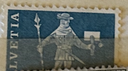
| SOURCE | TITLE| IMAGE MATCH | click to source page |
| lastdodo.com | Messenger from Schwyz 10 (1960) - Switzerland - LastDodo | 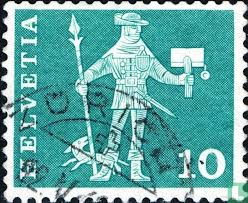 |
| Colnect | Stamp: Messenger of Schwyz (15th century) (Switzerland(Postal History - Motifs and Monuments) Mi:CH 697x,Sn:CH 383,Yt:CH 644,Sg:CH 615,AFA:CH 693,Un:CH 644,Zum:CH 356,Col:CH 1960.05.10-02 📮 | 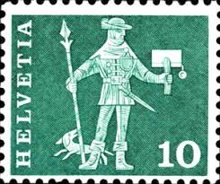 |
| Todocolección | suiza - helvetia - 10 - el mensajero - año 1960 - Buy Antique stamps of Switzerland on todocoleccion | 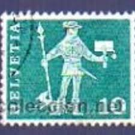 |
| Dreamstime.com | Messenger of Schwyz 15th Century, Postal History Motives and Monuments Serie, Circa 1963 Editorial Stock Image - Image of 1963, 15th: 102026154 | 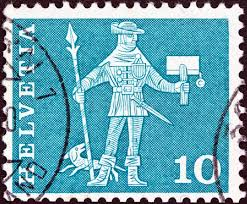 |
| Todocolección | sello suizo 1956: solidaridad con hungría refug - Compra venta en todocoleccion | 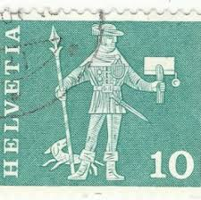 |
| Dreamstime.com | Swiss Postman Stock Photos - Free & Royalty-Free Stock Photos from Dreamstime | 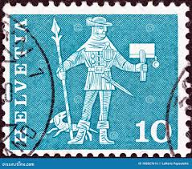 |
| Todocolección | sello helvetia suiza filatelia estampilla corre - Buy Antique stamps of Switzerland on todocoleccion | 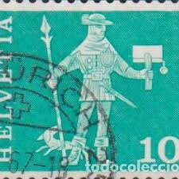 |
| Etsy | Vintage Polish Postage Stamp Set (1972) – "theatre" – Celebrating Polish Performing Arts - Etsy Australia | 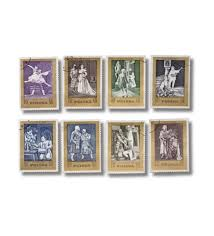 |
| Alamy | Swiss mailman hi-res stock photography and images - Alamy | 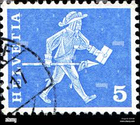 |
| eBay | Portugal E18 MNH 1994 3 Bl of 4v Europa | eBay | 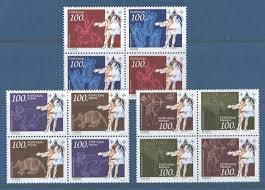 |
| abrostamps.com | US Scott 548-50 Pilgrim Tercentenary VF Mint NH – ABRO Stamps & Coins | 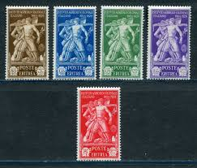 |
| eBay | Schweiz Jahrgang 1974 MiNr.1017-1045 Einzelmarken/Sätze postfrisch**zur Auswahl | eBay | 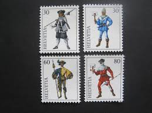 |
| eBay | Switzerland 1982 Europa/Confederation/Treaty/Scroll/Mural/History 2v set ex1047 | eBay | 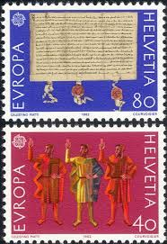 |
| eBay UK | Italy Aegean-General #C2 unused no gum a22.11 7004 | eBay UK | 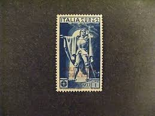 |
| BalkanAuction | Philately | Collectibles | BalkanAuction | 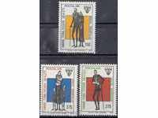 |
| anglosphere-foundation.com | Home - The Anglosphere Foundation | 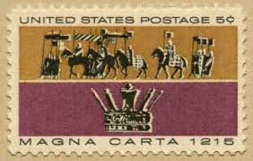 |
| Etsy | Moniuszko Opera Stamps: Polish Composer, 1972 Vintage Music - Etsy | 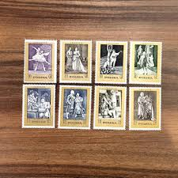 |
| eBay | Handstamped Cover Vatican Stamps for sale | eBay | 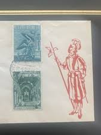 |
| eBay | ITALY SCOTT# C127 USED VF LOT# 75902 | eBay | 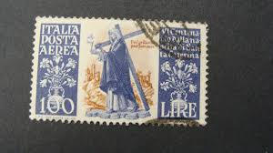 |
| PicClick | SWITZERLAND, POSTAGE STAMP, #173 Used, 1928 William Tell (AE) $3.99 - PicClick | 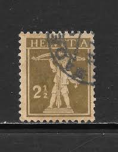 |
| eBay | 1265 5¢ MAGNA CARTA, LOT OF 400 MINT STAMPS, SPICE UP YOUR MAILINGS! | eBay | 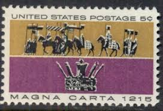 |
| eBay | Switzerland 1934 NABA Stamp Exhibition, Zurich poster stamp | eBay | 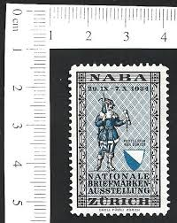 |
| eBay | Ireland Scott # 163, 164, 155, 156 - Used - CV=$25.45 | eBay | 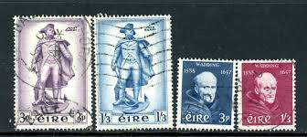 |
| Colnect | Switzerland : Stamps [Year: 1974] [1/5] : Colnect 📮 | 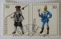 |
| eBay | Mint Hinged Sammarinese Stamps for sale | eBay | 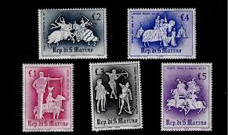 |
| eBay | Scott 1265- Magna Carta, King John's Crown- 5c MNH 1965- unused mint stamp | eBay | 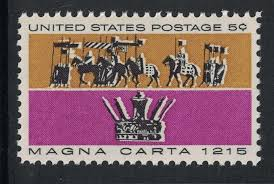 |
| eBay | Switzerland SC 149 VFU (9grf) | eBay | 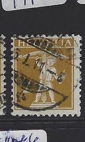 |
| eBay | San Marino 1963 MNH - Warriors - 200 Stamps 5 Full Sheets 40 Sets - Bented Once | eBay | 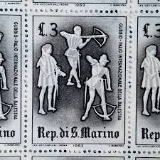 |
| eBay | Stamps France Scott #B248 nh | eBay | 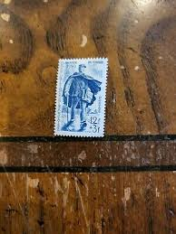 |
| eBay | SAN MARINO STAMP MNH Commemorative MINT unused WM5329 | eBay | 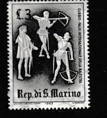 |
| eBay | ITALY 1930 SC#C22 MINT NG 5L + 2L BROWN VIOLET FERRUCCI AIRMAIL ISSUE -CV $16.00 | eBay | 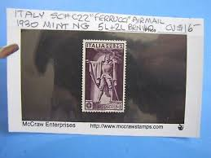 |
| HipStamp | USA 1965 - Scott 1265 used - 5c, Magna Carta 1215 | United States, General Issue Stamp / HipStamp | 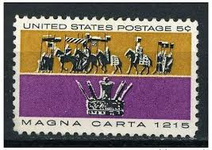 |
| eBay | STAMP US SCOTT 1265 "Magna Carta 1215" 5 CENT 1965 USED FANCY CANCEL | eBay | 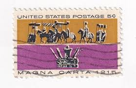 |
| Shutterstock | Usa Circa 1930 Stamp Printed Usa Stock Photo 59698000 | Shutterstock | 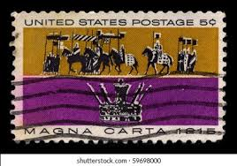 |
| Poppe Stamps | Poppe Stamps: San Marino, 1963, 704, Games, Statues And Monuments, Horse Riding, Games, Statues And Monuments, Horse Riding - stamps for sale by theme and country | 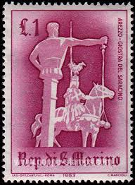 |
| Competitive Enterprise Institute | Happy Magna Carta Day - Competitive Enterprise Institute | 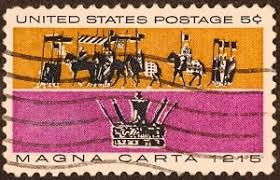 |
| eBay | 1265 5 Cent Magna Carta Color Shift. | eBay | 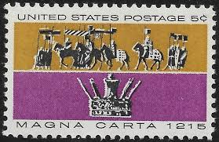 |
| Paul Fraser Collectibles | Great Britain 1969 5d Christmas error, SG813c | 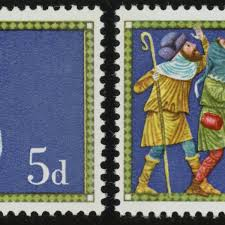 |
| Smithsonian Institution | 50 lire Guardsman single | National Postal Museum | 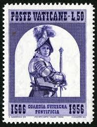 |
| Stamp Collecting Blog | Stranger on a strange land – Swiss postage stamp cancelled in UK | 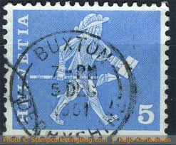 |
| timbre.sk | Saint Marin (San Marino) YT 589 ** | 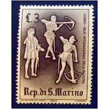 |
| eBay | Scott #1265 Barons & King John's Crown Single MNH U.S. Postage Stamp 1965 | eBay | 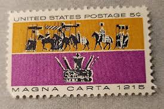 |
| eBay | Sc # 1265 ~ 5 cent Magna Carta Issue (ed18) | eBay | 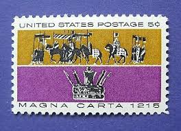 |
| eBay | SWITZERLAND STAMPS - SCOTT #244-246 - USED - SCV $105 | eBay | 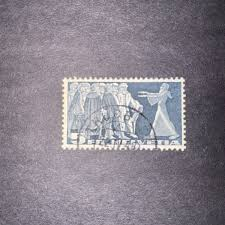 |
| eBay | Switzerland 1221-1222 (complete issue) used 1982 Europe | eBay | 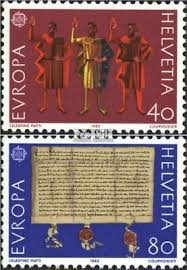 |
| eBay | US Postage Stamps 1960's Commemoratives Used | eBay | 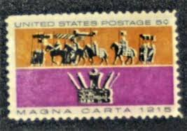 |
| eBay | US Stamp Scott #1247, New Jersey Tercentenary Issue, 5c, Plate Block, MNH | eBay | 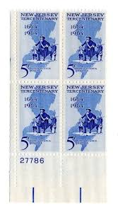 |
| lastdodo.com | Helio Courvoisier S.A. Stamp catalogue - LastDodo | 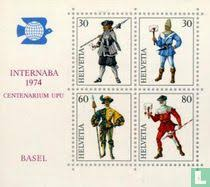 |
| The Philately | Danish West Indies 1873 Sc 6 Numeral of value Mi 6Ib for sale at The Philately | 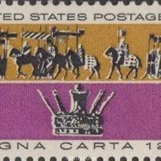 |
| eBay | 407922/ Reklamemarke - Propaganda - Deutscher Schulverein - ** | eBay | |
| eBay | San Marino 1963 - MNH - Warriors - Margin 5 Stamps Set | eBay | |
| eBay | STAMP US SCOTT 1265 "Magna Carta 1215" 5 CENT 1965 MNG VERT PAIR | eBay | |
| Desertcart UAE | Switzerland Block22 Complete Issue 1974 Internaba Stamps For Collectors Uniforms | Desertcart Haiti | |
| eBay | BELGIUM.- ''ROBERT DE JERUSALEM.- 1946 | eBay | |
| Shutterstock | 1+ Thousand Columbus Stamp Royalty-Free Images, Stock Photos & Pictures | Shutterstock | |
| Delcampe | Switzerland - SWITZERLAND # FROM 1960 STAMPWORLD 690A | |
| eBay | US Scott #1265 Magna Carta 5 Cent MNH | eBay | |
| Wikimedia.org | File:Switzerland Geneva 1860 revenue A1 2Fr - 9.jpg - Wikimedia Commons | |
| eBay | France 1953 MNH Mi 961-964 Sc 688-691 Famous books, characters of the works ** | eBay |
{kind=link}